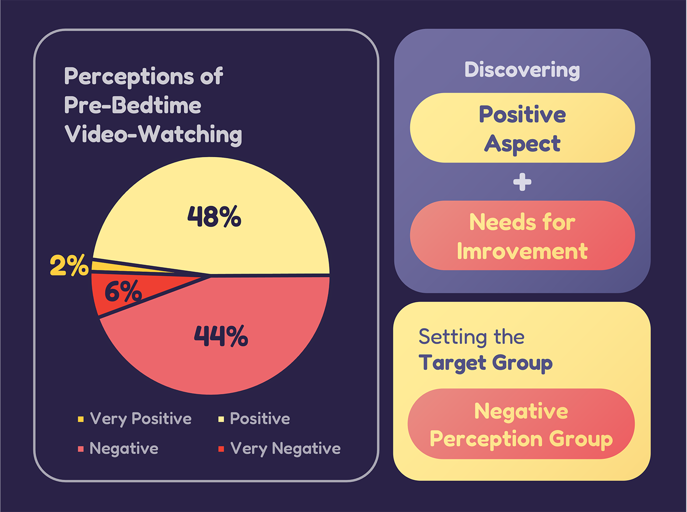
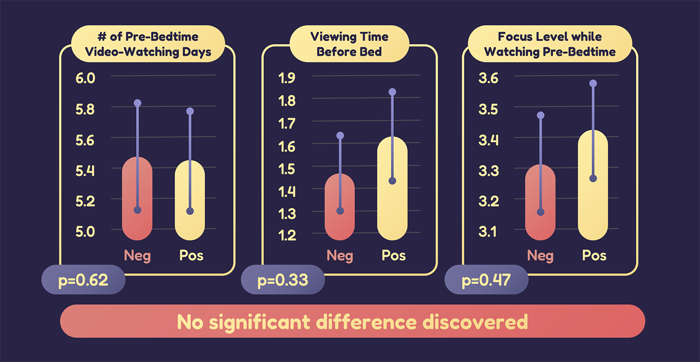
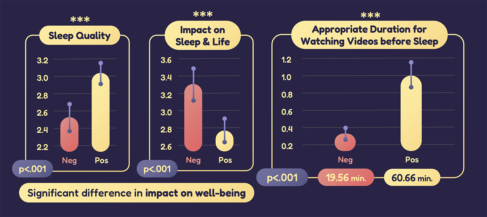

SleepTube
Primary Designer and Co-Researcher | Mar 2023 - Feb 2024
Proceedings of HCI Korea 2024
- Team of three student researchers; I served as the sole designer
Background
Is watching videos before sleep positive or negative?
Sleep deprivation affects both physical and mental health, contributing to issues like obesity and depression. One major cause is watching videos before bed, which can activate the brain and make it difficult to sleep. With the rise of platforms like YouTube and Netflix, continuous video watching has become common, further delaying sleep.
However, some studies suggest that watching videos before bed may reduce stress, potentially improving sleep quality. The impact of pre-sleep video watching depends on various factors, including the individual’s motives, the types of videos watched, and their effects on sleep.
Research Question
“How can we help people control their video-watching habits before sleep to improve their sleep quality and overall well-being?”
Study 1: Survey
In August 2023, an online survey was conducted with 241 adults (aged 18 and over) who habitually watch videos before bed. The survey aimed to explore video-watching patterns and contexts, with six sections:
- Daytime Video-Watching Pattern and Context
- Pre-Bedtime Video-Watching Pattern and Context
- Impact of Pre-Bedtime Video-Watching
- Perceptions and Goals of Video-Watching
- Methods for Stopping Video-Watching
- Demographic Information
The Duality of Watching Videos Before Bedtime

The survey revealed an almost even split in perceptions of watching videos before bed, with 119 people holding positive views and 122 holding negative views. This indicates both potential benefits and areas for improvement. Based on these perceptions, we categorized participants and conducted an in-depth analysis comparing the two groups using t-tests and Chi-Square tests.
Characteristics of the Negative Perception Group

No significant differences were found between the positive and negative perception groups regarding the frequency, duration, or concentration of watching videos before bedtime.
However, the negative perception group reported significantly poorer sleep quality and a greater perceived impact of video watching on sleep and daily life. They also experienced more difficulty stopping videos and believed that a shorter duration of video watching before sleep was appropriate.
What does the survey results show?
The negative perception group reported lower sleep quality despite no significant difference in viewing duration compared to the positive perception group.
- One possible explanation is that the negative perception group perceived an appropriate viewing time of only 19.56 minutes, significantly lower than the 60.66 minutes of the positive perception group.
- Responses to open-ended questions, such as concerns about the negative effects of video watching on sleep, suggest that guilt and negative emotions about video watching may contribute to poorer sleep quality.
- Previous research indicates that procrastination and perfectionistic tendencies lead to guilt and negative emotions, which can hinder sleep.
This suggests a cycle where negative emotions about video watching worsen sleep quality.
Study 2: Interview
To better understand pre-sleep video consumption, we conducted semi-structured interviews with eight individuals (university students and working professionals in their twenties) who had a negative perception of watching videos before bed.
Key Insights from the Interviews
- Importance of Video Watching Before Bed
Participants valued this time as a quiet, personal period for focused video consumption, suggesting that Digital Self-Control Tools (DSCT) should support this experience. - Video Watching as a Low-Energy Hobby
Watching videos was considered an easy, low-energy hobby, making it hard to replace with other activities. Only reducing screen time might not be the best solution. - Need for Better Video Selection
Participants often struggled to find enjoyable content, with some suggesting pre-selecting videos before bed to improve the experience. - Emotional Support for Video Watching
Negative perceptions around watching videos before bed affected enjoyment and sleep quality. A more positive approach to video watching could improve sleep. - Personalized Tools
Participants’ habits varied depending on their schedule, indicating a need for tools that adapt to individual situations. - Shielding from Endless Recommendations
Many participants struggled with the temptation of endless video suggestions. A system to limit recommendations could help reduce excessive viewing.
Designing SleepTube
Based on survey and interview findings, we identified the need for a digital self-control tool for managing video watching before bed. We designed a prototype for YouTube to address these needs.
- Better Viewing Satisfaction
A “shopping cart” feature lets users add videos throughout the day and watch them within a set time limit before bed, improving viewing satisfaction. - Emotional Support
After watching all selected videos, the app character offers positive reinforcement like “Well done! You’ll be able to sleep well now!” to help users transition to sleep. - Flexible Goal Setting
Users can set daily viewing limits based on their energy levels and schedule, with the app adjusting based on responses like tiredness or upcoming tasks. - Blocking Excessive Recommendations
To prevent over-watching, we separated the search and recommendation functions, allowing users to watch only pre-selected videos from their playlist.